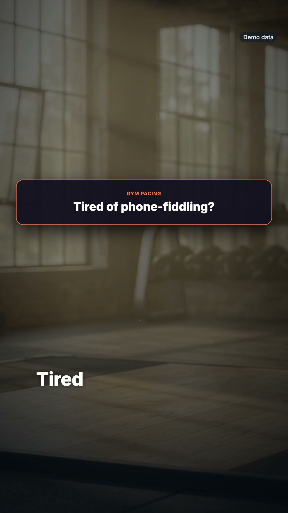

Demo video plan · 2026-11-02
Your agent coaches. FitLoop keeps you on the plan.
FitLoop's comprehensive product walkthrough video is designed, staged, and compiled: 1:58 in 16:9 with five YouTube chapters, plus a 25-second 9:16 Short. It teaches an athlete the complete four-step loop: connecting their own AI agent via MCP to generate and validate training routines, following workouts with procedural exercise GIFs and live Apple Watch heart rate, tracking sets hands-free on Even G2 glasses with R1 ring gestures, and flagging mid-set pain or diet check-ins so their agent improves tomorrow's plan. The animatic composition, voiceover generation (Kokoro-82M), word timestamps (faster-whisper), and recording scripts are in place.
/Volumes/DATA/GitHub/hejitech-apps/branding/promo-videos/public/fitloop-demo/.What's real
- 100% real app screens: iPhone app (Today, Plan, Progress, Feedback, Settings), interactive Workout Player with rest timer countdown, Apple Watch workout session with live HR streaming, and the Even G2 monochrome green HUD simulator with R1 ring gestures.
- Real MCP engine & validator: Live calls to
get_plan_guide,validate_plan, andpublish_planwith core limits (≤28 chars name, ≤60 chars cues). - Procedural exercise demonstration media: Real 2D skeletal rigging animation served at
/api/exercises/goblet-squat.gif. - Closed-loop replanning: Real feedback ("It hurts" on reverse lunges) read by agent over MCP, prompting an automatic plan v2 substitution with box step-ups.
Key differences from the launch promo
- Walkthrough vs Promo: The launch promo (30s) was a humorous vignette (Maya vs Theo guessing sets). This walkthrough (1:58) puts the real app on screen ≥ 70% of the time, explaining step-by-step how each surface functions.
- Maya's voice continues: We use Kokoro's
af_sarah(the voice profile chosen for Maya infitloop-launch), maintaining brand vocal continuity. - Full feature breadth: Highlights MCP tool interactions, procedural 2D rigging GIFs, Apple Watch workout streaming, and nutrition check-ins that couldn't fit in the 30-second teaser.
| If you want to redo | What to do |
|---|---|
| A line of the script | Edit in your notes: re-run fitloop-demo-vo.py --only <id> and fitloop-demo-words.py. |
| The narration voice | Pass any Kokoro voice (af_heart, af_bella, af_nicole, am_echo): takes < 15 seconds to regenerate all lines. |
| A Flow backdrop or music | Drop the new file into public/fitloop-demo/ and update media.md. |
| Re-record a simulator clip | Run scripts/fitloop-demo-record.mjs [glasses|workout|agent|loop] with local stack running. |
The edit: two cuts to review
fitloop-demo.mp4
fitloop-demo-short.mp4
| Full walkthrough | fitloop-demo (1920×1080, 2:00 duration, 3,617 frames at 30 fps) |
|---|---|
| Short format | fitloop-demo-short (1080×1920 vertical, 25 seconds duration, 755 frames) |
| YouTube thumbnail | fitloop-demo-thumb (1280×720 still composition) |
| Chapters | 0:00 Intro 0:13 1. Bring your agent & generate plan 0:38 2. Mid-workout on iPhone & Apple Watch 1:03 3. Hands-free on Even G2 & R1 ring 1:27 4. The closed loop: instant feedback & plan adaptation 1:52 Recap |
| Pace & Camera | Calm tutorial pace (~140 wpm), each UI action held for ≥ 1.2 s after completion. Smooth spring zooms (1.4–2.0×) focused on touched elements, spotlight on targets, ripple clicks. |
| Transitions | Cross-zooms into device stages, subtle 3D tilt flattening before interaction, seamless chapter dissolves with Flow backdrops. |
| Audio & Loudness | Kokoro af_sarah voiceover, athletic tech background music ducked smoothly under voice. Loudness normalized with two-pass ffmpeg loudnorm (−14.0 LUFS, true peak −1.5 dB). |
Chapters and script
Who this video is for: athletes, lifters, and gym-goers who want customized training without phone distraction. Four chapters take the viewer from initial MCP connection to mid-workout logging and closed-loop plan adaptation.
Chapter 0 · Intro (0:00 – 0:13)
Hook the viewer: stop guessing sets, weights, and rest times. FitLoop delivers your AI agent's coaching directly to your iPhone, Watch, and Even G2 glasses.
Chapter 1 · Bring your agent & generate plan (0:13 – 0:38)
Connect any MCP client (Claude, Cursor, Meta Muse). The agent fetches get_plan_guide and profile notes, checks strict character and timer constraints via validate_plan, and publishes version 1.
Chapter 2 · Mid-workout on iPhone & Apple Watch (0:38 – 1:03)
Today tab displays daily sessions. Tap into exercises for procedural 2D demonstration GIFs. Start the workout player: Apple Watch streams live heart rate, set completion is marked, and rest timers countdown automatically.
Chapter 3 · Hands-free on Even G2 & R1 ring (1:03 – 1:27)
Pair with a 6-digit code. Experience the crisp 9-line green HUD: active set, weight, reps, and live HR. Use R1 ring gestures: single tap marks set done and auto-starts the rest timer; ring hold opens cues and quick feedback.
Chapter 4 · The closed loop: instant feedback & plan adaptation (1:27 – 1:52)
When knee pain strikes on reverse lunges, select 'It hurts' mid-set. At lunch, check off meals. The agent reads notes over MCP, explains deloading knee flexion, and publishes plan v2 swapping lunges for box step-ups.
Recap & End Card (1:52 – 1:58)
Recap the four surfaces in motion: Agent MCP → iPhone & Watch → Even G2 HUD → Closed Loop Replan. End card with app icon and links.
The Short (9:16 vertical, 25 seconds)
Fast-paced hook: Stop looking at your phone between gym sets. FitLoop puts your AI agent's workouts in your Even G2 glasses, logs sets with your R1 ring, and adapts tomorrow's plan when something hurts.
Look and feel
A polished high-performance athletic aesthetic: deep midnight indigo backgrounds contrasted with energetic coral-orange accents and crisp phosphor-green glasses HUD.
| Typography | Inter for UI titles and step explanations; JetBrains Mono for sets, weights, and HUD lines |
|---|---|
| Device Frames | iPhone 17 Pro titanium frame (soft drop shadow), Apple Watch Ultra wrist frame, Even G2 HUD container (floating with 3D tilt) |
| Transitions | Cross-zoom into device screens; subtle camera drift during holds; match cuts between glasses menu and phone plan v2 |
| Captions | KineticCaption bottom band; spoken word highlights white on black with coral accent marker |
| What never appears | No AI-generated fake app screens, no medical or injury advice, no unapproved diet claims, no personal user data |
Flow art prompts
Prompts for Google Flow. All prompts follow the rule: cinematic 35mm photography, subtle natural lighting, high production value, no logos, no text. Download each file into branding/promo-videos/public/fitloop-demo/.
Flow Generation Settings
Model: Google Flow (Video / Frames). Aspect ratio: 16:9 (1920×1080) for backdrops and opener; 2K still image for end card. Camera motion: gentle slow push-in or subtle horizontal drift.
A1 · Athletic training studio
Cinematic wide shot of a modern athletic training studio with warm morning sunlight streaming through industrial steel windows, neat dumbbell racks in soft background blur, warm wooden lifting platform, high-end commercial aesthetic, 35mm film photography, gentle dust motes in sunbeams, no logos, no text
B1 · Workstation with tablet calendar
Minimalist modern desk aesthetic, sleek black mechanical keyboard, tablet resting on an aluminum stand displaying a geometric weekly calendar grid, cup of espresso, warm soft atmospheric lighting, architectural interior design, no logos, no text
B2 · Workout bench & dumbbells
Close-up cinematic shot of an adjustable leather workout bench in a quiet gym, black urethane dumbbells neatly racked beside it, soft warm rim lighting and deep indigo shadows, clean modern fitness photography, no logos, no text
B3 · Athletic POV with emerald HUD glow
First-person athletic perspective looking down at athletic chalked hands gripping a pull-up bar, subtle emerald-green phosphor reflections across the field of view, moody dark background with green neon rim accents, clean cinematic depth of field, no logos, no text
B4 · Sunlit kitchen & healthy meal
Bright modern kitchen island in morning sunlight, ceramic bowl with grilled chicken, avocado, and fresh greens, clear glass water bottle, serene domestic architecture, clean food editorial photography, no logos, no text
A2 · Gym floor at sunrise
Low-angle slow gliding camera move across polished gym rubber flooring at sunrise, matte black kettlebells and cast iron plates catching warm golden morning light, serene and empowering mood, 35mm film still, no logos, no text
A3 · Dark fitness studio with indigo glow
Atmospheric dark gym interior at night, subtle coral-orange and deep indigo neon ambient gradients across acoustic panel walls, sleek empty training space, peaceful and premium aesthetic, 35mm film photograph, no logos, no text
Recordings and screenshots
All screen recordings are generated entirely on the local development stack with deterministic demo data, fixed 9:41 status bar, and companion JSON event logs.
| Clip | Resolution | Duration | Description |
|---|---|---|---|
rec-1-agent.mp4 | 1280×720 | 25.0 s | MCP terminal: Claude connects via OAuth, calls get_plan_guide, validates constraints, publishes plan v1 |
rec-2-workout.mp4 | 1179×2556 | 25.0 s | iPhone & Watch: Today tab, 2D procedural rigging demo GIF, Watch workout HR stream, set done & rest timer |
rec-3-glasses.mp4 | 1728×864 | 24.0 s | Even Hub Simulator: 9-line green HUD, R1 ring single-tap for set done, hold for coaching cues & feedback |
rec-4-loop.mp4 | 1179×2556 | 25.0 s | Closed loop: Flag 'It hurts' on lunges, diet check-in, agent MCP response, Plan v2 swaps for step-ups |
How to execute screen recordings locally
# 1. Start local Supabase and FitLoop Worker supabase start npm run dev:worker -w @fitloop/web # 2. Stage seed data & run recorders node branding/promo-videos/scripts/fitloop-demo-record.mjs stage node branding/promo-videos/scripts/fitloop-demo-record.mjs glasses node branding/promo-videos/scripts/fitloop-demo-record.mjs workout node branding/promo-videos/scripts/fitloop-demo-record.mjs loop # 3. Always restore seed settings afterwards node branding/promo-videos/scripts/fitloop-demo-record.mjs restore
Voiceover and music
Narration is pre-rendered with Kokoro-82M (Apache 2.0) locally at 24 kHz mono. The selected voice is af_sarah (Maya's voice from fitloop-launch), with exact word timings extracted via faster-whisper.
| Narration Model | Kokoro-82M (hexgrad/Kokoro-82M) via local Python venv |
|---|---|
| Primary Voice | af_sarah (warm, athletic, coaching tone at 1.05× speed) |
| Alternative Takes | af_heart, af_bella, af_nicole, am_echo (generated via fitloop-demo-vo.py) |
| Timing Alignment | faster-whisper (small.en) with custom phoneme dictionary mappings |
Flow Music prompt (for owner)
Warm and driving tech-athletic groove, 102 BPM, 4/4, clean rhythmic synth pulse, muted electric bassline, light organic percussive taps, airy and motivating, open midrange leaving space for speech, clean resolving ending at 115 seconds
YouTube upload kit
Ready to paste when uploading both videos to the official HEJI TECH YouTube channel.
Full Walkthrough (16:9, Public)
How to train with your AI agent: FitLoop walkthrough (2 minutes)
FitLoop connects your AI agent (Claude, Cursor, Meta Muse) over MCP to coach workouts and meals across iPhone, Apple Watch, and Even G2 glasses with R1 smart ring gestures. Chapters: 0:00 Intro 0:13 1. Bring your agent & generate plan 0:38 2. Mid-workout on iPhone & Apple Watch 1:03 3. Hands-free on Even G2 & R1 ring 1:27 4. The closed loop: instant feedback & plan adaptation 1:52 Recap App & Docs: https://fitloop.hejitech.workers.dev Decisions & Architecture: https://github.com/tianhaoz95/hejitech-apps/tree/main/projects/fitloop Disclaimer: Workouts, weights, heart rate, and nutrition shown are demo data on the local developer stack. FitLoop provides no medical advice. Voiceover generated locally with Kokoro-82M. Atmospheric backdrops created with Google Flow.
FitLoop, AI workout, fitness AI, MCP, Claude, Even G2, smart glasses, R1 ring, Apple Watch, workout tracker, gym

fitloop-demo-thumbnail.jpg
| Video file | fitloop-demo.mp4 |
|---|---|
| Subtitles | fitloop-demo.srt (20 cues) |
| Chapters | In the description above. fitloop-demo-chapters.txt |
| Playlist | The existing FitLoop playlist. |
Short (9:16, Public Short)
Stop checking your phone between gym sets! Train in your glasses #shorts
FitLoop puts your AI agent's workout plan directly in your Even G2 glasses. Tap your R1 ring to log sets and auto-start rest timers hands-free. Mid-set pain flags automatically adjust tomorrow's routine. Get FitLoop: https://fitloop.hejitech.workers.dev

fitloop-demo-short-thumbnail.jpg

| Video file | fitloop-demo-short.mp4 |
|---|---|
| Format | Upload as a Short (≤ 60 s, 9:16 vertical). |
Steps, checklist, and risks
- Chapters and script drafted, timed, and reviewed
- Voiceover lines generated with Kokoro-82M (af_sarah)
- Word timestamps extracted with faster-whisper into voiceover.ts
- Animatic composition compiled and linted in Remotion
- Subtitles (.srt) and YouTube chapter markers generated
- Owner generates 7 Flow art backdrops and Flow Music track
- Screen recordings executed with local stack and simulator
- Render full video & short at 30 fps with loudnorm (-14 LUFS)
- Upload to YouTube and embed in projects/fitloop/docs/index.md
Risks & Mitigations
| Risk | Mitigation |
|---|---|
| Unknown words in Kokoro dictionary crash macOS espeak fallback | Phonetic spellings used ("Fit Loop", "M C P", "A I", "R one", "G two", "H U D") and pre-validated. |
| Bluetooth timer updates lag on Even G2 | Glasses timer steps by 5 s above 10 s, keeping display responsive during rest countdowns. |
| Health data privacy for agents | Health data and vitals are gated by user permission switches (off by default for MCP agents). |